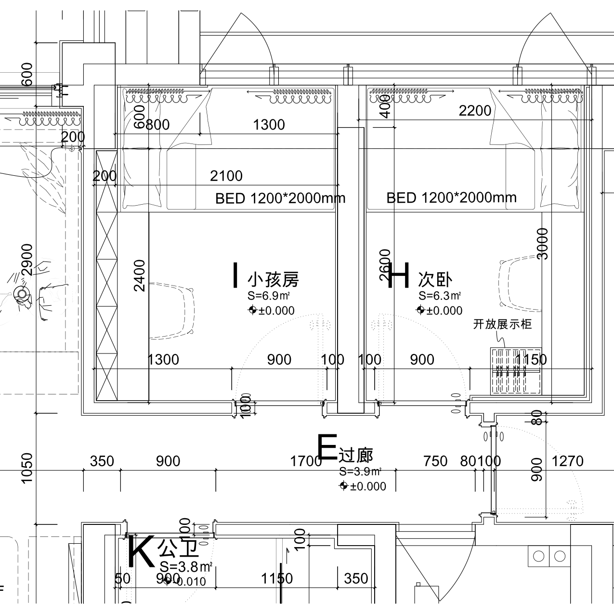
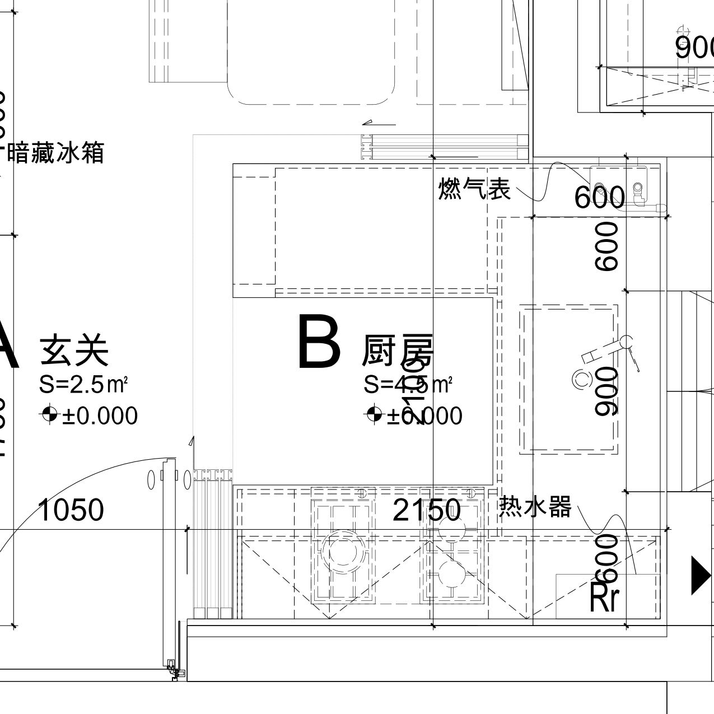

旧报告把书房家具前沿尺寸当成房间净宽，并混用了墙体定位与装修完成面。本页已纠正口径。厨房局部完成面包络已修改；书房、过道仍有残差，全屋统一定位尚未通过，不能用于定制开料或施工放线。
| 项目 | DWG原标注含义 | DWG完成面 | 模型当前值 | 状态 |
|---|---|---|---|---|
| 书房宽 | 200＋2100＝2300；2100从原图浅柜前沿起，不是房间总宽 | 2260mm | 2295.6mm | 仍大35.6mm；撤销“相差196mm”的结论，未直接缩窄房间 |
| 过道宽 | 1050为墙体定位线之间 | 1010mm | 1027.5mm | 仍大17.5mm；整体墙定位待校准 |
| 厨房包络 | 2150×2100为原图标注，端点与完成面不同 | 2120×2040mm | 2120×2040mm 原为1910×2023mm | 局部完成面包络已改；整体定位、门窗尺寸仍待核 |
书房底部定位链为1300＋900＋100＝2300mm；左侧另画200mm浅柜，2100mm尺寸从该柜前沿起量。完成面两侧各有20mm关系，因此图中完成面总宽2260mm。过道原墙界线5796－4746＝1050mm，完成面5776－4766＝1010mm。

| 对象 | 读取坐标 | 差值 |
|---|---|---|
| 书房原墙内侧X | −32911 → −30611 | 2300 |
| 书房2100尺寸端点X | −32711 → −30611 | 2100 |
| 书房ZP-2完成面X | −32891 → −30631 | 2260 |
| 过道ZP-2完成面Y | 4766 → 5776 | 1010 |
| 厨房西边界至东侧完成面X | −34561 → −32441 | 2120 |
| 厨房南北完成面Y | 826 → 2866 | 2040 |
坐标来源：开发商交付DWG转换的DXF中，ZP-1墙体定位／原墙与ZP-2完成面实体。厨房西侧是玻璃隔断边界，不能把它当作实体墙厚再扣一次。图纸完成面仍不等同于现场竣工复尺。
保留现有西、北玻璃边界作为模型局部锚点，将东侧墙面向外移210mm、南侧墙面向外移约17mm；外窗随东墙移动，地面轮廓、台面、柜体及东侧吊顶示意同步跟随。该锚点与全屋DWG统一坐标的关系仍未校准。
洗碗机模块保持600mm，两侧柜门约427mm；水槽侧地柜深600mm。此次没有按比例拉伸电器。原窗宽860mm、玻璃门净开口及设备标高未因包络校准而自动获得确认。

主卧墙角核对 · 层高与风口冲突 · 返回MYM-32模型